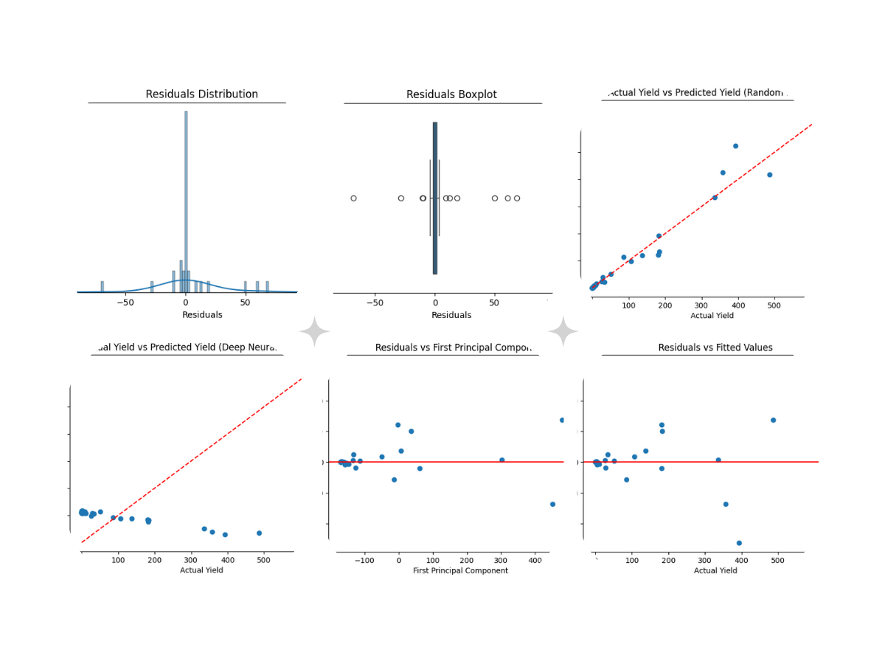
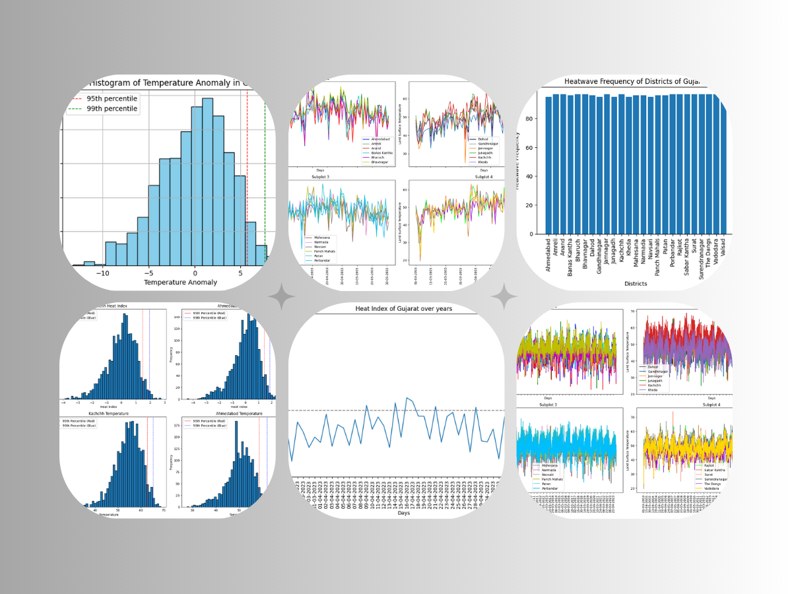
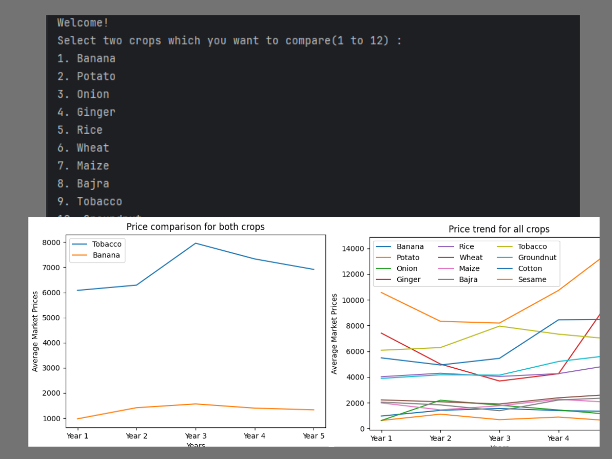
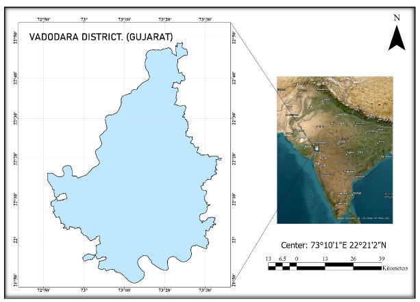
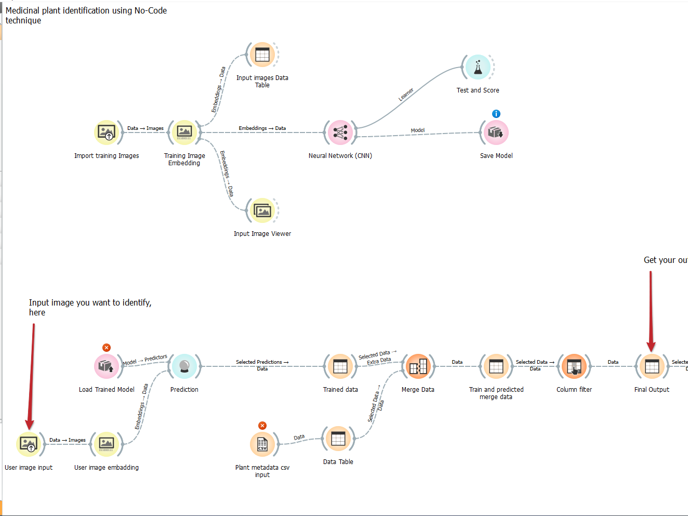
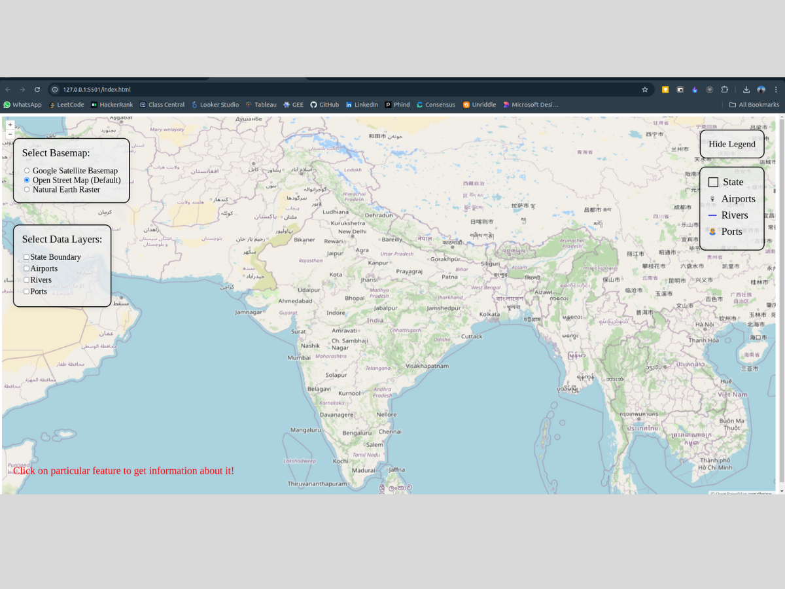
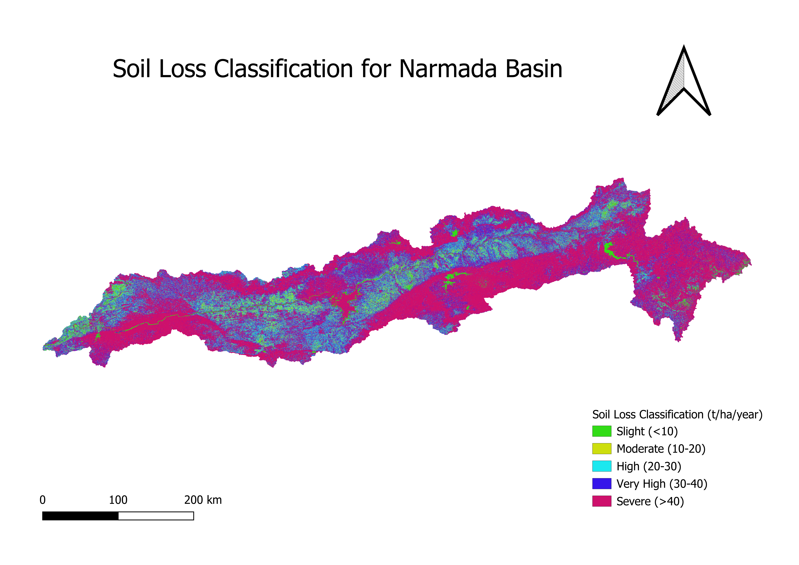
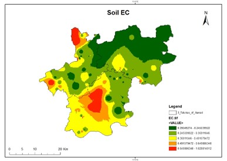
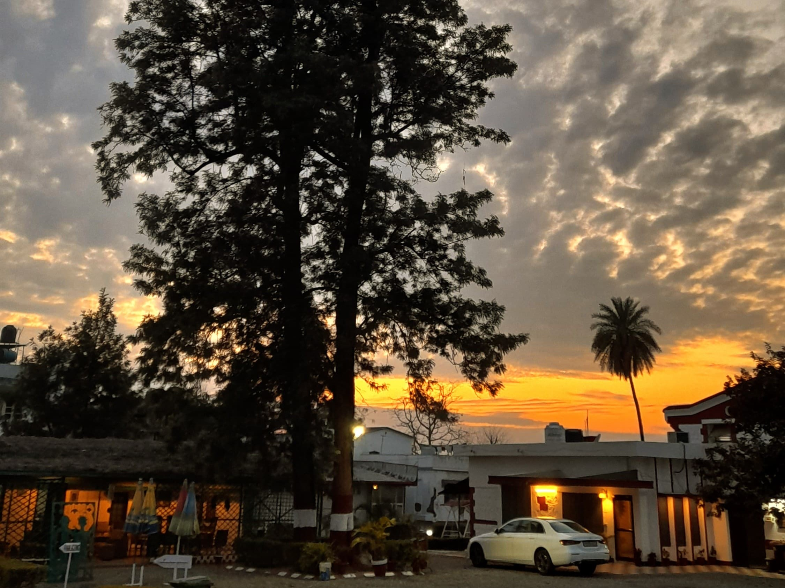

Currently
Quality Engineer @ Zeus Learning
Also
Freelance learner: Data & GIS
Quality Engineer · Data/GIS Analyst
Hi, I’m Smit Bhuva.
I work in software quality assurance at Zeus Learning (Mumbai) — focused on reliable releases, great UX, and learning automation testing with Playwright. I also explore data analysis and GIS through projects.
About
What I do and what I enjoy building.
I'm a Quality Engineer at Zeus Learning, Mumbai, specializing in software quality assurance. My expertise includes manual testing and I am currently learning BDD (Behavior Driven Development) methods using Playwright for automation testing. I am passionate about ensuring software reliability and delivering seamless user experiences.
Alongside my full-time role, I continue to explore data analysis and GIS as a part-time learner. I enjoy turning complex data into simple, insightful visualizations and have experience analyzing large datasets, developing dashboards, and working with geospatial data. My goal is to bring technical excellence and creative problem-solving to every project I undertake.
What I’m doing
-
Data analysis
Turning complex data into simple, beautiful & insightful visualizations.
-
GIS analysis
Manipulating, analyzing and visualizing spatial data.
-
Data science
Building ML & DL models for real-world problems.
-
Manual testing
Detailed test design, execution, and defect reporting.
-
Automation testing
Learning Playwright + BDD for fast, consistent QA.
-
Mobile photography
Capturing moments with composition-focused storytelling.
Experience & education
My timeline so far.
Experience
-
Quality Engineer
-
Quality Engineering Intern
Education
-
M.Sc. Agriculture Analytics
Collaboration with IIRS and Anand Agricultural University (AAU).
-
B.Sc. (Hons.) Agriculture
-
12th Science
-
10th
Projects
Selected work across data analysis, GIS, machine learning, and creative storytelling.
-

Cumin Yield Prediction
Built a predictive model to estimate cumin crop yield using environmental and agricultural parameters.
Cleaned and structured multi-source agricultural datasets. Performed feature engineering on climate and soil variables.
Applied regression models to predict yield outcomes and evaluated model performance using RMSE and R² metrics.
Impact: Enabled data-driven insights for yield estimation, helping identify key factors affecting crop productivity.
-

Heatwave Analysis
Analyzed historical temperature data to identify heatwave trends and anomalies.
Processed time-series climate datasets and detected extreme temperature events using threshold-based logic.
Visualized seasonal and long-term heat patterns.
Impact: Provided insights into increasing heatwave frequency, useful for climate risk awareness and planning.
-

Crop Profitability Analysis
Evaluated profitability across different crops using cost, yield, and market price data.
Built comparative models for crop-wise net profit, analyzed cost-to-return ratios, and created visual dashboards for decision support.
Impact: Helped identify high-profit crops and optimize agricultural decision-making.
-

Soil Nutrient Analysis
Performed spatial analysis of soil nutrients to identify fertility patterns.
Processed geospatial datasets in QGIS, generated thematic maps for nutrient distribution, and identified nutrient-deficient regions.
Impact: Supports precision agriculture by enabling targeted soil treatment strategies.
-

Medicinal Plants Identification (No-code ML)
Built a machine learning solution for identifying medicinal plants using image data.
Used no-code ML tools for model training, processed image datasets for classification, and evaluated model accuracy.
Impact: Demonstrates practical application of ML in agriculture and botany.
-

Web GIS Map Visualization
Developed an interactive web-based GIS visualization for spatial data exploration.
Integrated geospatial data into web maps and built interactive layers for better usability.
Impact: Improved accessibility of GIS data for non-technical users.
-

Soil Erosion Mapping
Mapped soil erosion risk using terrain and environmental data.
Applied spatial modeling techniques and classified erosion risk into multiple levels.
Impact: Helps in land management and conservation planning.
-

Soil Properties Estimation
Estimated key soil properties using geospatial interpolation techniques.
Used spatial interpolation methods such as IDW and kriging, modeled distribution of soil parameters, and validated outputs against sample data.
Impact: Enables better agricultural planning through predictive soil insights.
-

Mobile Photography Portfolio
Curated a collection of mobile photography focused on composition and storytelling.
Focused on lighting, framing, and subject clarity while building a consistent visual style.
Impact: Showcases creativity and attention to detail, valuable for UX and visual thinking.
Skills
Tools and areas I work with.
- Manual testing
- Automation testing (learning)
- BDD
- Playwright
- Python
- SQL
- Power BI
- Tableau
- QGIS
- ERDAS
- HTML
- CSS
Contact
Want to collaborate or chat? Reach out.